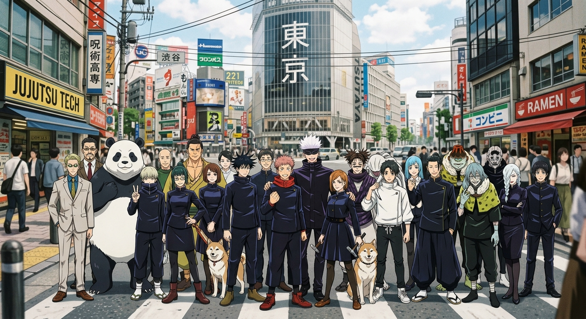
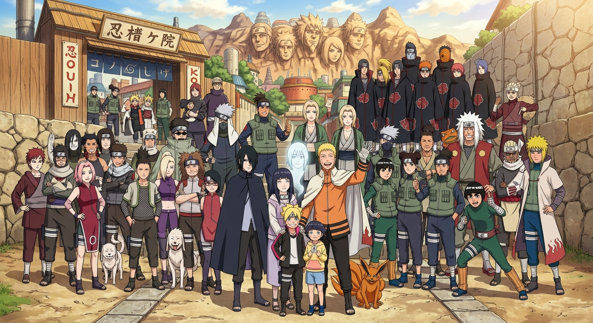
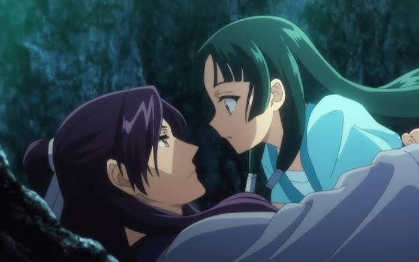
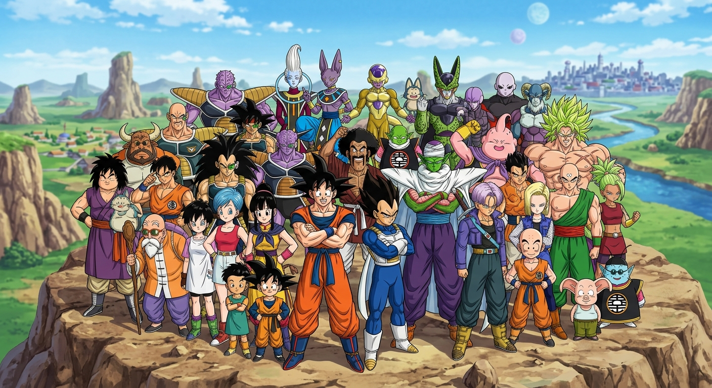

Bem-vindo ao meu blog!
Esse é meu blog sobre animes, criado para compartilhar informações, curiosidades e opiniões sobre algumas das minhas obras favoritas.

Aqui você poderá conhecer um pouco mais sobre Jujutsu Kaisen, Naruto, Diário de uma Apotecária e Dragon Ball.
Use os botões do menu para escolher o anime que você deseja conhecer.
Este site também possui espaços reservados para imagens. Você pode colocar suas próprias imagens dos personagens e cenas que quiser.
👹 Jujutsu Kaisen

Jujutsu Kaisen é um anime de ação, fantasia e sobrenatural.
A história acompanha Yuji Itadori, um estudante que possui uma força física impressionante.
A vida de Yuji muda quando ele entra em contato com um objeto amaldiçoado.
Esse objeto está relacionado a Ryomen Sukuna, uma das figuras mais perigosas da história.
Para proteger outras pessoas, Yuji acaba se envolvendo com o mundo dos feiticeiros jujutsu.
Ele passa a estudar na Escola Técnica de Jujutsu de Tóquio.
Lá ele conhece personagens importantes como Megumi Fushiguro e Nobara Kugisaki.
Satoru Gojo também possui um papel muito importante na história.
Gojo é conhecido por ser um dos feiticeiros mais poderosos.
O anime apresenta batalhas intensas e diferentes técnicas amaldiçoadas.
Os personagens precisam enfrentar maldições que surgem dos sentimentos negativos dos seres humanos.
Além das lutas, a história também trabalha temas como amizade, perda e escolhas difíceis.
A relação entre Yuji e seus amigos é uma das partes importantes da narrativa.
Jujutsu Kaisen também possui vários personagens com habilidades muito diferentes.
Cada batalha pode apresentar novas estratégias e técnicas.
O anime ficou conhecido mundialmente por suas cenas de ação e animação.
Para mim, Jujutsu Kaisen é uma ótima escolha para quem gosta de ação e histórias sobrenaturais.
⭐ Minha opinião
Eu gosto de Jujutsu Kaisen porque a história possui personagens interessantes, lutas emocionantes e muitos mistérios e do toji ele e um lindo.
🍥 Naruto

Naruto é um dos animes mais conhecidos do mundo.
A história acompanha Naruto Uzumaki, um jovem ninja da Vila da Folha.
Desde criança, Naruto sonha em se tornar Hokage.
O Hokage é considerado o líder e um dos ninjas mais importantes da vila.
0 Naruto cresce enfrentando dificuldades e muitas pessoas não o tratam bem.
Mesmo assim, ele continua acreditando em seus sonhos.
Durante sua jornada, Naruto faz amizades muito importantes.
Entre elas estão Sakura Haruno e Sasuke Uchiha.
Os três fazem parte do Time 7, liderado por Kakashi Hatake.
Sasuke se torna uma pessoa muito importante para o desenvolvimento da história.
Naruto precisa enfrentar vários inimigos e desafios durante sua jornada.
O anime apresenta diferentes vilas, clãs, técnicas ninjas e personagens.
Um dos elementos importantes da história são os jutsus.
Os jutsus são técnicas utilizadas pelos ninjas para lutar e realizar diferentes habilidades.
Naruto também possui uma criatura poderosa dentro de si chamada Kurama.
Ao longo da história, Naruto amadurece e aprende a lidar com seus poderes.
A amizade, a determinação e a superação são temas muito presentes no anime.
A jornada de Naruto mostra que uma pessoa pode superar grandes dificuldades.
Por isso, Naruto conquistou muitos fãs ao redor do mundo.
⭐ Minha opinião
Naruto é um anime que gosto principalmente pela evolução dos personagens e pelas mensagens sobre amizade, esforço e nunca desistir dos seus sonhos.
🌿 Diário de uma Apotecária

Diário de uma Apotecária é uma história que mistura mistério, drama e elementos históricos.
A protagonista da história é Maomao.
Maomao é uma jovem extremamente inteligente e possui conhecimentos sobre medicina e medicamentos.
Ela foi criada em um ambiente onde aprendeu bastante sobre ervas e venenos.
Em determinado momento, Maomao acaba trabalhando dentro do palácio imperial.
No palácio, ela começa a perceber que existem diversos acontecimentos misteriosos.
Por causa de seus conhecimentos, Maomao consegue solucionar problemas que outras pessoas não conseguem.
Ela observa detalhes pequenos e utiliza seu raciocínio para descobrir a verdade.
A personalidade de Maomao é uma das características mais interessantes da obra.
Ela é curiosa, inteligente e muitas vezes demonstra uma maneira diferente de pensar.
A história também apresenta Jinshi, um personagem que possui grande importância na trama.
O anime apresenta diversos mistérios relacionados à vida dentro do palácio.
Maomao utiliza seus conhecimentos para investigar doenças, venenos e outros acontecimentos.
Diferentemente de muitos animes de ação, a protagonista resolve problemas principalmente usando inteligência.
A obra também apresenta detalhes sobre a sociedade e os costumes de sua época.
Os cenários do palácio ajudam a criar uma atmosfera diferente e bastante bonita.
Cada episódio pode apresentar um novo mistério para Maomao investigar.
O anime é uma boa opção para quem gosta de histórias de investigação.
⭐ Minha opinião
Eu gosto de Diário de uma apotecaria porque tem um pouco de romance junto com a raiva que ela tem do mestre
🐉 Dragon Ball

Dragon Ball é uma das franquias de anime mais famosas de todos os tempos.
A história acompanha Son Goku, um guerreiro que possui habilidades extraordinárias.
No início da história, Goku é apresentado como uma criança com uma força impressionante.
Ele conhece Bulma, que está procurando pelas Esferas do Dragão.
As Esferas do Dragão são objetos mágicos capazes de realizar desejos.
Durante sua jornada, Goku conhece muitos amigos e adversários.
Mestre Kame é um dos personagens que ajuda Goku a desenvolver suas habilidades.
Goku também conhece Kuririn, que se torna seu amigo e companheiro de treinamento.
A franquia apresenta vários torneios de artes marciais.
Conforme a história avança, os desafios ficam cada vez maiores.
Goku descobre mais sobre sua origem e sobre a raça Saiyajin.
Os Saiyajins são uma raça de guerreiros extremamente poderosos.
Vegeta é outro personagem muito importante e começa como um rival de Goku.
Com o passar do tempo, a relação entre Goku e Vegeta muda bastante.
Dragon Ball possui diversas transformações e técnicas famosas.
Uma das transformações mais conhecidas é o Super Saiyajin.
A série possui batalhas contra inimigos cada vez mais poderosos.
Mesmo com tantos desafios, Goku continua treinando para ficar mais forte.
A amizade e a vontade de proteger as pessoas são partes importantes da história.
Dragon Ball influenciou várias gerações de fãs de anime.
⭐ Minha opinião
Dragon Ball é um anime muito divertido para quem gosta de lutas, personagens carismáticos, transformações e grandes aventuras.